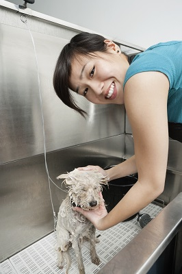

Services
Our grooming facility includes these services: Bathing and Shampooing, Haircut and Styling, Nail Trimming, Ear Cleaning, Teeth Cleaning, De-shedding, Flea and Tick Treatment, Skin and Coat Conditioning, and Specialty Services.
- 🐾Bathing and Shampooing: $25
- 🐾Haircut and Styling: $40
- 🐾Nail Trimming: $15
- 🐾Ear Cleaning: $10
- 🐾Teeth Cleaning: $20
- 🐾De-shedding: $30
- 🐾Flea and Tick Treatment: $25
- 🐾Skin and Coat Conditioning: $20
- 🐾Specialty Services: Prices vary, please inquire for details.
Introducing our luxurious grooming packages tailored to pamper your beloved furry friend. Our Pampered Pooch Package, priced at $60, is the epitome of indulgence, encompassing a comprehensive array of services to ensure your pet's ultimate comfort and well-being. From a soothing bath and expert shampooing to a stylish haircut and precise nail trimming, every aspect of grooming is meticulously attended to. Additionally, we provide thorough ear and teeth cleaning to promote optimal hygiene and health. Furthermore, our skilled groomers administer a specialized skin and coat conditioning treatment, leaving your pet's fur irresistibly soft and lustrous. For those seeking a blend of elegance and practicality, our Grooming Essentials Package offers all the fundamental services at a competitive rate of $45. Meanwhile, our Deluxe Spa Package, priced at $75, elevates the grooming experience with the inclusion of de-shedding treatment, ensuring your pet emerges not only impeccably groomed but also shedding significantly less. Prioritizing your pet's wellness, our Wellness and Protection Package, priced at $50, focuses on essential hygiene and preventive care, offering bathing, nail trimming, ear cleaning, teeth cleaning, and flea and tick treatment to safeguard your pet from common health concerns. Indulge your furry companion with our exquisite grooming packages and witness the transformation into a pampered and radiant pet.
Packages:
Pampered Pooch Package: $60
- Bathing and Shampooing
- Haircut and Styling
- Nail Trimming
- Ear Cleaning
- Teeth Cleaning
- Skin and Coat Conditioning
Grooming Essentials Package: $45
- Bathing and Shampooing
- Haircut and Styling
- Nail Trimming
- Ear Cleaning
Deluxe Spa Package: $75
- Bathing and Shampooing
- Haircut and Styling
- Nail Trimming
- Ear Cleaning
- Teeth Cleaning
- Skin and Coat Conditioning
- De-shedding
Wellness Package: $50
- Bathing and Shampooing
- Nail Trimming
- Ear Cleaning
- Teeth Cleaning
- Flea and Tick Treatment

Service Descriptions
The descriptions of these services can be found by accessing this website on desktop or tablet, or by calling :
- Bathing and Shampooing
-
- Basic baths using dog-friendly shampoos and conditioners.
- Medicated baths for dogs with skin conditions.
- Haircut and Styling
-
- Breed-specific haircuts or customized styles based on the owner's preference.
- Trimming and shaping of the coat.
- Nail Trimming
-
- Regular nail trimming to prevent overgrowth and discomfort for the dog.
- Ear Cleaning
-
- Cleaning and removal of excess ear wax to prevent infections.
- Teeth Cleaning
-
- Teeth Brushing.
- Other dental care services to maintain oral health.
- De-shedding
-
- Removal of loose fur to reduce shedding and keep the coat healthy.
- Flea and Tick Treatment
-
- Application of flea and tick control products to protect the dog from parasites.
- Skin and Coat Conditioning
-
- Application of moisturizers or treatments to maintain a healthy coat and skin.
- Specialty Services*
-
- Creative grooming for those who want unique styles or colors.
- Spa treatments, such as aromatherapy or massages.
- Specialized services for senior dogs or those with specific health issues.
*Specialty services upon request

Hours
- Mon-Thu: 6:00am - 6:00pm
- Friday: 6:00am - 4:00pm
- Saturday: 8:00am - 6:00pm
- Sunday: Closed
Specialty Services
Creative Grooming
- Unique Styles: $50 - $150 (depending on complexity)
- Coloring: $30 - $100 (based on size and intricacy)
- Creative Patterns: $60 - $200 (varies with design complexity)
Spa Treatments
- Aromatherapy: $20 - $50 (includes essential oils)
- Massages: $25 - $80 (depending on session length)
Specialized Services for Senior Dogs or Those with Health Issues
- Gentle Grooming for Seniors: $40 - $80 (includes extra care and attention)
- Medicated Baths: $30 - $60 (for dogs with skin conditions)
- Mobility Support: $15 - $50 (assistance for arthritic dogs)
Call the number under Service Descriptions, to get quote on specialty services.
Our Groomers
- Charlotte
- Charlotte is a seasoned dog groomer renowned for her gentle touch and deep understanding of canine behavior. With over a decade of experience in the industry, she has earned a reputation for her exceptional skill in handling dogs of all breeds and temperaments. Charlotte's passion for grooming extends beyond mere aesthetics; she prioritizes the well-being and comfort of each furry client that crosses her doorstep. Her tranquil salon exudes a calming atmosphere, ensuring that every pup feels relaxed and at ease during their grooming sessions. Clients often praise Charlotte not only for her grooming expertise but also for her genuine love and care for their four-legged companions. Her dedication to providing top-notch grooming services coupled with her compassionate approach makes Charlotte a beloved figure in the local pet community.
- John
- John is a dog groomer with a contagious enthusiasm for his craft. Despite being relatively new to the profession, John's natural affinity for animals and his eagerness to learn have quickly propelled him to success. His genuine affection for dogs shines through in every interaction, fostering trust and rapport with both pets and their owners. John's attention to detail is unmatched; he meticulously tends to each dog's grooming needs, ensuring they leave his salon looking and feeling their best. His warm demeanor and dedication to customer satisfaction have earned him a loyal following within the community. Whether it's a routine bath or a full grooming session, clients know they can rely on John to provide expert care with a smile.
- Sarah
- Sarah is a seasoned dog groomer whose passion for her work is evident in every furry client she attends to. With years of experience under her belt, Sarah has honed her skills to perfection, earning a reputation as one of the most sought-after groomers in town. Her gentle demeanor and innate understanding of canine behavior create a calming atmosphere in her salon, putting both dogs and their owners at ease. Sarah approaches each grooming session with dedication and care, taking the time to tailor her services to meet the unique needs of every dog in her care. From soothing baths to precise trims, Sarah's attention to detail ensures that each pup leaves her salon looking and feeling their absolute best. Clients rave about Sarah's professionalism, expertise, and unwavering commitment to the well-being of their beloved pets, making her a beloved figure in the local dog grooming community. 
- Jane
- Jane is a dog groomer known for her unparalleled expertise and genuine love for animals. With a career spanning over a decade, Jane has perfected her craft, becoming a trusted name in the industry. Her passion for dogs extends beyond grooming; she forms deep connections with each furry client that enters her salon. Jane's gentle touch and calming presence create a stress-free environment, ensuring every dog feels safe and comfortable during their grooming session. From basic baths to intricate trims, Jane approaches every task with precision and care, leaving no detail overlooked. Clients praise Jane not only for her exceptional grooming skills but also for her unwavering dedication to the happiness and well-being of their beloved pets. With Jane, dogs aren't just clients – they're cherished companions, and her commitment to their care is evident in every interaction.


For More Information: Visit https://carleighsmith.github.io/webdev24/poochparlor/index.html On Desktop
Or Call at: